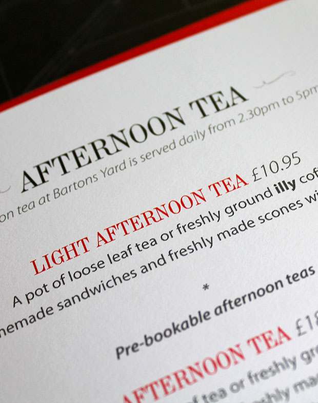

SLJ Media’s experience of working on high-profile projects will undoubtedly help us realise our vision for the development…

Carlisle based property developer Burge Halston have revealed plans to convert the City’s former main post office building into a stylish complex which will feature an 17 room luxury aparthote and spa, a bar/bistro, a family restaurant and a fully serviced functions suite. SLJ Media have been commissioned to create a family of distinctive brands and a new website to enable the company to promote and market the various facets of the development.
SLJ Media’s experience of working on high-profile projects will undoubtedly help us realise our vision for the development…